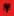
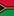

🏆 EURO 2024
| Date | Fixture  Bold-faced team is selected by AIGoalie to win. Bold-faced team is selected by AIGoalie to win. |
Odds Pre-match odds of the selected team winning. Note that odds are fetched once per day at 00:00 GMT, meaning some matches may have live odds. Also odds may not be available for all leagues. |
Win How confident AIGoalie is that the selected team will win. Low confidence indicates unpredictability of the match. ▼ |
Result Whether the selected team won, drew, or lost. |
Over The minimum number of goals predicted by AIGoalie. ⚽ = over 0.5 ⚽⚽ = over 1.5 ⚽⚽⚽ = over 2.5 ... ► |
Alerts Home 🏥 = Considerable injuries 🏥🏥 = Major injuries 📉 = Dip in form Note, you may see injuries when expanding match but no alert here, meaning the model does not consider them important. |
Alerts Away 🏥 = Considerable injuries 🏥🏥 = Major injuries 📉 = Dip in form Note, you may see injuries when expanding match but no alert here, meaning the model does not consider them important. |
|
|---|---|---|---|---|---|---|---|---|
| Sat. 15 Jun. | Spain  3:0 Croatia Form: WWWW Form: WLDD |
0.97 vs -0.97 | 1.96 | 69% | ✓ | ⚽⚽ 2.24 |
📉 Away team has a dip in form recently | |
| Sat. 15 Jun. | Italy  2:1  Albania Form: WLDL Form: WLDL |
0.73 vs -0.73 | 1.4 | 59% | ✓ | 😴 0.68 |
📉 Home team has a dip in form recently | 📉 Away team has a dip in form recently |
| Sat. 15 Jun. | Hungary  1:3  Switzerland Form: WLLW Form: DDWL |
-0.09 vs -0.01 | 2.26 | 10% | ✓ | ⚽ 1.52 |
📉 Home team has a dip in form recently | 📉 Away team has a dip in form recently |
🏆 Copa América 2024
| Date | Fixture Bold-faced team is selected by AIGoalie to win. |
Odds Pre-match odds of the selected team winning. Note that odds are fetched once per day at 00:00 GMT, meaning some matches may have live odds. Also odds may not be available for all leagues. |
Win How confident AIGoalie is that the selected team will win. Low confidence indicates unpredictability of the match. ▼ |
Result Whether the selected team won, drew, or lost. |
Over The minimum number of goals predicted by AIGoalie. ⚽ = over 0.5 ⚽⚽ = over 1.5 ⚽⚽⚽ = over 2.5 ... ► |
Alerts Home 🏥 = Considerable injuries 🏥🏥 = Major injuries 📉 = Dip in form Note, you may see injuries when expanding match but no alert here, meaning the model does not consider them important. |
Alerts Away 🏥 = Considerable injuries 🏥🏥 = Major injuries 📉 = Dip in form Note, you may see injuries when expanding match but no alert here, meaning the model does not consider them important. |
|---|
🌍 Global
| Date | Fixture Bold-faced team is selected by AIGoalie to win. |
Odds Pre-match odds of the selected team winning. Note that odds are fetched once per day at 00:00 GMT, meaning some matches may have live odds. |
Win How confident AIGoalie is that the selected team will win. Low confidence indicates unpredictability of the match. ▼ |
Result Whether the selected team won, drew, or lost. |
Over The minimum number of goals predicted by AIGoalie. ⚽ = over 0.5 ⚽⚽ = over 1.5 ⚽⚽⚽ = over 2.5 ... ► |
Alerts Home 🏥 = Considerable injuries 🏥🏥 = Major injuries 📉 = Dip in form Note, you may see injuries when expanding match but no alert here, meaning the model does not consider them important. |
Alerts Away 🏥 = Considerable injuries 🏥🏥 = Major injuries 📉 = Dip in form Note, you may see injuries when expanding match but no alert here, meaning the model does not consider them important. |
|
|---|---|---|---|---|---|---|---|---|
| Sat. 15 Jun. | FK Slutsk  0:5 Dinamo Minsk Form: LLWW Form: WWWW |
-1.56 vs 1.31 | 73% | ✓ | ⚽⚽⚽ 3.45 |
📉 Home team has a dip in form recently | ||
| Sat. 15 Jun. | Argentina  4:1  Guatemala Form: WWWW Form: DWWL |
1.29 vs -2.09 | 1.05 | 73% | ✓ | 😴 0.84 |
📉 Away team has a dip in form recently | |
| Sat. 15 Jun. | Guatemala 01:00 Argentina Form: DWWL Form: WWWW |
-1.29 vs 1.25 | 1.08 | 73% | 😴 0.84 |
📉 Home team has a dip in form recently | ||
| Sat. 15 Jun. | Esperance Tunis  2:0  US Monastir Form: LWWD Form: WLDL |
1.09 vs -1.7 | 71% | ✓ | 😴 0.54 |
📉 Away team has a dip in form recently | ||
| Sat. 15 Jun. | B36 Tórshavn  1:1  B68 Toftir Form: DLWW Form: DLLD |
1.06 vs -2.0 | 1.32 | 71% | ⁃ | ⚽⚽ 2.03 |
📉 Home team has a dip in form recently | 📉 Away team has a dip in form recently |
| Sat. 15 Jun. | Spain 3:0 Croatia Form: WWWW Form: WLDD |
0.97 vs -0.97 | 1.96 | 69% | ✓ | ⚽⚽ 2.24 |
📉 Away team has a dip in form recently | |
| Sat. 15 Jun. | CA Boca Juniors  1:0 CA Vélez Sarsfield Form: WLWW Form: DDWL |
0.94 vs -1.84 | 67% | ✓ | ⚽⚽ 2.24 |
📉 Home team has a dip in form recently | 📉 Away team has a dip in form recently | |
| Sat. 15 Jun. | True Bangkok United  5:2 after pens  Dragon Pathumwan Kanchanaburi FC Form: WLWW Form: WLWL |
0.88 vs -1.81 | 65% | ✓ | ⚽⚽ 2.22 |
📉 Home team has a dip in form recently | 📉 Away team has a dip in form recently | |
| Sat. 15 Jun. | Turun Palloseura  1:0  Mikkelin Palloilijat Form: WWLD Form: LDLW |
0.84 vs -1.51 | 64% | ✓ | ⚽ 1.91 |
📉 Home team has a dip in form recently | 📉 Away team has a dip in form recently | |
| Sat. 15 Jun. | Italy 2:1 Albania Form: WLDL Form: WLDL |
0.73 vs -0.73 | 1.4 | 59% | ✓ | 😴 0.68 |
📉 Home team has a dip in form recently | 📉 Away team has a dip in form recently |
| Sat. 15 Jun. | AC Oulu  5:1  Käpylän Pallo Form: DWWL Form: LLDD |
0.72 vs -1.57 | 1.12 | 59% | ✓ | ⚽⚽⚽ 3.19 |
📉 Home team has a dip in form recently | 📉 Away team has a dip in form recently |
| Sat. 15 Jun. | Colombia  3:0  Bolivia Form: WWDW Form: LLLL |
0.7 vs -1.9 | 1.17 | 58% | ✓ | ⚽⚽ 2.37 |
📉 Away team has a dip in form recently | |
| Sat. 15 Jun. | Chongqing Tonglianglong  3:1  Wuxi Wugo Form: WWLD Form: LLWD |
0.68 vs -1.46 | 1.05 | 57% | ✓ | ⚽⚽ 2.27 |
📉 Home team has a dip in form recently | 📉 Away team has a dip in form recently |
| Sat. 15 Jun. | FA Siauliai  3:3  FC Dziugas Telsiai Form: DDWW Form: WLLD |
0.67 vs -1.53 | 1.38 | 57% | ⁃ | ⚽ 1.44 |
📉 Away team has a dip in form recently | |
| Sat. 15 Jun. | Zhejiang FC  3:1  Changchun Yatai Form: WWLL Form: LWDW |
0.62 vs -1.39 | 55% | ✓ | ⚽⚽ 2.45 |
📉 Home team has a dip in form recently | ||
| Sat. 15 Jun. | Club Plaza Colonia  19:00  IA Sud América Form: LWLL Form: DLLD |
0.51 vs -1.53 | 50% | 😴 0.77 |
🏥 📉 Home team has considerable injuries and a dip in form recently | 📉 Away team has a dip in form recently | ||
| Sat. 15 Jun. | Club Plaza Colonia 19:00 IA Sud América Form: LWLL Form: DLLD |
0.51 vs -1.53 | 50% | 😴 0.77 |
🏥 📉 Home team has considerable injuries and a dip in form recently | 📉 Away team has a dip in form recently | ||
| Sat. 15 Jun. | Neman Grodno  1:0  BATE Borisov Form: WLWW Form: LWLD |
0.49 vs -1.19 | 49% | ✓ | ⚽⚽ 2.34 |
📉 Home team has a dip in form recently | 📉 Away team has a dip in form recently | |
| Sat. 15 Jun. | Ho Chi Minh City FC  1:1  Thep Xanh Nam Dinh FC Form: DDWW Form: WWWL |
-0.9 vs 0.44 | 45% | ⁃ | ⚽ 1.69 |
📉 Away team has a dip in form recently | ||
| Sat. 15 Jun. | Heilongjiang Ice City  1:2  Guangxi Pingguo Haliao Form: WLLW Form: DWWD |
-1.08 vs 0.43 | 45% | ✓ | ⚽ 1.8 |
📉 Home team has a dip in form recently | ||
| Sat. 15 Jun. | Kyoto Sanga  2:0  Hokkaido Consadole Sapporo Form: LDWW Form: LLLL |
0.41 vs -1.43 | 43% | ✓ | ⚽ 1.75 |
🏥 📉 Away team has considerable injuries and a dip in form recently | ||
| Sat. 15 Jun. | Bumprom Gomel  3:0  Shakhter 2 Soligorsk Form: WLDW Form: LLDL |
0.41 vs -1.07 | 42% | ✓ | ⚽ 1.85 |
📉 Home team has a dip in form recently | 📉 Away team has a dip in form recently | |
| Sat. 15 Jun. | Skála IF  0:4  Víkingur Gøta Form: LLLD Form: WLLW |
-0.66 vs 0.39 | 41% | ✓ | ⚽⚽ 2.89 |
📉 Home team has a dip in form recently | 📉 Away team has a dip in form recently | |
| Sat. 15 Jun. | Red Bull Bragantino  1:1'  Esporte Clube Juventude Form: LDWL Form: LWLL |
0.38 vs -1.12 | 41% | ⚽ 1.52 |
📉 Home team has a dip in form recently | 📉 Away team has a dip in form recently | ||
| Sat. 15 Jun. | FK Banga Gargzdai  2:0  FK TransINVEST Form: DLWD Form: WLWL |
0.38 vs -1.11 | 41% | ✓ | ⚽ 1.6 |
📉 Home team has a dip in form recently | 📉 Away team has a dip in form recently | |
| Sat. 15 Jun. | CA Rentistas  22:00  CA Atenas de San Carlos Form: DWLD Form: WLLD |
0.37 vs -1.07 | 1.75 | 40% | 😴 0.77 |
📉 Home team has a dip in form recently | 📉 Away team has a dip in form recently | |
| Sat. 15 Jun. | Dynamo Brest  6:1 Dnepr Mogilev Form: WLDL Form: LLDL |
0.37 vs -0.95 | 39% | ✓ | ⚽⚽ 2.38 |
📉 Home team has a dip in form recently | 📉 Away team has a dip in form recently | |
| Sat. 15 Jun. | Atlético Ottawa  1:2  York United FC Form: LDWL Form: WWLW |
0.36 vs -1.11 | 1.66 | 39% | ❌ | ⚽ 1.86 |
📉 Home team has a dip in form recently | 📉 Away team has a dip in form recently |
| Sat. 15 Jun. | Neftchi Fergana  1:1  Surkhon Termiz Form: LDLL Form: DWLW |
0.36 vs -0.89 | 39% | ⁃ | ⚽ 1.17 |
📉 Home team has a dip in form recently | 📉 Away team has a dip in form recently | |
| Sat. 15 Jun. | Belshina Bobruisk  1:1  FK Ostrovets Form: DWWW Form: DWLD |
0.36 vs -1.08 | 39% | ⁃ | ⚽⚽ 2.38 |
📉 Away team has a dip in form recently | ||
| Sat. 15 Jun. | DFK Dainava Alytus  0:0  FK Kauno Zalgiris Form: LWLD Form: WWLW |
-0.98 vs 0.35 | 38% | ⁃ | ⚽ 1.28 |
📉 Home team has a dip in form recently | 📉 Away team has a dip in form recently | |
| Sat. 15 Jun. | Dalian Yingbo  0:3  Yunnan Yukun Form: LWLD Form: WWLW |
-0.64 vs 0.33 | 1.86 | 37% | ✓ | ⚽ 1.3 |
📉 Home team has a dip in form recently | 📉 Away team has a dip in form recently |
| Sat. 15 Jun. | Shijiazhuang Gongfu  0:0  Shanghai Jiading Huilong Form: LDLL Form: WLDD |
0.33 vs -1.14 | 36% | ⁃ | 😴 0.57 |
📉 Home team has a dip in form recently | 📉 Away team has a dip in form recently | |
| Sat. 15 Jun. | Sanfrecce Hiroshima  4:1  Tokyo Verdy Form: WDDL Form: WLWD |
0.32 vs -0.92 | 35% | ✓ | ⚽⚽ 2.2 |
📉 Home team has a dip in form recently | 📉 Away team has a dip in form recently | |
| Sat. 15 Jun. | Sepahan FC  2:1  Gol Gohar Sirjan FC Form: WWWW Form: LLLL |
0.31 vs -1.35 | 35% | ✓ | ⚽ 1.6 |
🏥 📉 Away team has considerable injuries and a dip in form recently | ||
| Sat. 15 Jun. | Solomon Islands  0:1  Vanuatu Form: WLLL Form: WLWL |
0.31 vs -0.91 | 35% | ❌ | ⚽⚽⚽ 3.68 |
📉 Home team has a dip in form recently | 📉 Away team has a dip in form recently | |
| Sat. 15 Jun. | Liaoning Tieren  0:1  Foshan Nanshi Form: DWLL Form: DWLW |
0.3 vs -1.01 | 34% | ❌ | ⚽ 1.38 |
📉 Home team has a dip in form recently | 📉 Away team has a dip in form recently | |
| Sat. 15 Jun. | América Futebol Clube (MG)  2:1  Clube de Regatas Brasil (AL) Form: LDLW Form: WDLD |
0.3 vs -1.01 | 34% | ✓ | ⚽⚽ 2.61 |
📉 Home team has a dip in form recently | 📉 Away team has a dip in form recently | |
| Sat. 15 Jun. | Club Nacional  21:30  Liverpool FC Montevideo Form: LWWD Form: LLWL |
0.29 vs -0.9 | 33% | ⚽⚽ 2.04 |
📉 Away team has a dip in form recently | |||
| Sat. 15 Jun. | FK Khujand  13:30  Vakhsh Bokhtar Form: DDDW Form: LLWL |
0.27 vs -1.27 | 32% | 😴 0.39 |
📉 Home team has a dip in form recently | 📉 Away team has a dip in form recently | ||
| Sat. 15 Jun. | FK Liepaja  1:1  BFC Daugavpils Form: LLLL Form: WLWL |
0.25 vs -0.95 | 30% | ⁃ | ⚽ 1.49 |
📉 Home team has a dip in form recently | 📉 Away team has a dip in form recently | |
| Sat. 15 Jun. | Aluminium Arak FC  3:5 after pens  Mes Rafsanjan Form: WLDL Form: LLWL |
0.24 vs -0.87 | 29% | ❌ | ⚽⚽ 2.18 |
📉 Home team has a dip in form recently | 📉 Away team has a dip in form recently | |
| Sat. 15 Jun. | Pärnu JK Vaprus  1:4  JK Trans Narva Form: LWLL Form: WLLD |
0.24 vs -0.99 | 2.66 | 29% | ❌ | ⚽⚽ 2.18 |
📉 Home team has a dip in form recently | 📉 Away team has a dip in form recently |
| Sat. 15 Jun. | Gwangju FC  2:0  Gimcheon Sangmu Form: LLWL Form: WWWD |
-0.96 vs 0.23 | 3.7 | 29% | ❌ | ⚽ 1.64 |
📉 Home team has a dip in form recently | |
| Sat. 15 Jun. | Kalev Tallinn  2:5  Paide Linnameeskond Form: LLWD Form: WLWD |
-0.87 vs 0.21 | 1.58 | 27% | ✓ | ⚽⚽ 2.08 |
📉 Home team has a dip in form recently | 📉 Away team has a dip in form recently |
| Sat. 15 Jun. | Jeonnam Dragons  1:1  Bucheon FC 1995 Form: DDWW Form: LWLD |
0.2 vs -0.97 | 2.28 | 26% | ⁃ | ⚽ 1.5 |
📉 Away team has a dip in form recently | |
| Sat. 15 Jun. | CA Huracán  1:0'  CS Independiente Rivadavia Form: WWWW Form: WLLL |
0.18 vs -0.95 | 24% | ⚽ 1.14 |
📉 Away team has a dip in form recently | |||
| Sat. 15 Jun. | CA River Plate Montevideo  1:1  Club Deportivo Maldonado Form: LDWL Form: LDLD |
0.16 vs -1.01 | 23% | ⁃ | ⚽ 1.32 |
📉 Home team has a dip in form recently | 📉 Away team has a dip in form recently | |
| Sat. 15 Jun. | 07 Vestur  19:00  HB Tórshavn Form: LWWL Form: LLLW |
-0.54 vs 0.16 | 1.43 | 23% | ⚽⚽ 2.54 |
📉 Home team has a dip in form recently | 📉 Away team has a dip in form recently | |
| Sat. 15 Jun. | Independiente Santa Fe  18:30  Atlético Bucaramanga Form: WWLW Form: LWWL |
0.14 vs -0.76 | 21% | ⚽ 1.15 |
📉 Home team has a dip in form recently | 📉 Away team has a dip in form recently | ||
| Sat. 15 Jun. | Melville United  03:00  Tauranga City AFC Form: WLWW Form: WDWL |
0.13 vs -0.84 | 20% | ⚽⚽⚽ 3.81 |
📉 Home team has a dip in form recently | 📉 Away team has a dip in form recently | ||
| Sat. 15 Jun. | TB Tvøroyri  1:1  HB Tórshavn II Form: DWDW Form: DLWL |
0.11 vs -0.89 | 18% | ⁃ | ⚽ 1.72 |
📉 Away team has a dip in form recently | ||
| Sat. 15 Jun. | Khosilot Farkhor  15:00 FK Istaravshan Form: DDDW Form: WWDL |
0.1 vs -0.77 | 18% | 😴 0.83 |
📉 Home team has a dip in form recently | 📉 Away team has a dip in form recently | ||
| Sat. 15 Jun. | Labasa FC  02:30  Rewa FA Form: WWDW Form: DWWL |
-0.47 vs 0.07 | 16% | ⚽ 1.52 |
📉 Away team has a dip in form recently | |||
| Sat. 15 Jun. | FC Hegelmann  3:2  FK Suduva Marijampole Form: LDWW Form: LLLD |
0.07 vs -0.85 | 16% | ✓ | ⚽⚽ 2.2 |
📉 Away team has a dip in form recently | ||
| Sat. 15 Jun. | Etoile Sportive du Sahel  1:2  CS Sfaxien Form: DLDL Form: DLWD |
0.04 vs -0.78 | 2.08 | 13% | ❌ | 😴 0 |
📉 Home team has a dip in form recently | 📉 Away team has a dip in form recently |
| Sat. 15 Jun. | FK Lida  1:0  Energetik-BGU Minsk Form: WLDL Form: LLDD |
0.03 vs -1.07 | 12% | ✓ | ⚽ 1.91 |
🏥 📉 Home team has considerable injuries and a dip in form recently | 📉 Away team has a dip in form recently | |
| Sat. 15 Jun. | Avaí FC 3:2  Guarani Futebol Clube (SP) Form: WDDD Form: DLDL |
0.0 vs -0.83 | 10% | ✓ | ⚽ 1.13 |
📉 Home team has a dip in form recently | 📉 Away team has a dip in form recently | |
| Sat. 15 Jun. | Nanjing City 2:1  Qingdao Red Lions Form: DWWD Form: WLLL |
-0.0 vs -0.66 | 10% | ✓ | 😴 0.99 |
📉 Away team has a dip in form recently | ||
| Sat. 15 Jun. | Fujieda MYFC  1:3  Yokohama FC Form: LLWW Form: WWWW |
-0.64 vs -0.01 | 1.74 | 10% | ✓ | ⚽ 1.77 |
📉 Home team has a dip in form recently | |
| Sat. 15 Jun. | Hungary 1:3 Switzerland Form: WLLW Form: DDWL |
-0.09 vs -0.01 | 2.26 | 10% | ✓ | ⚽ 1.52 |
📉 Home team has a dip in form recently | 📉 Away team has a dip in form recently |
| Sat. 15 Jun. | Utsiktens BK  0:1  Varbergs BoIS Form: LLLL Form: DWWL |
-0.04 vs -0.8 | 1.89 | 9% | ❌ | ⚽ 1.82 |
📉 Home team has a dip in form recently | 📉 Away team has a dip in form recently |
| Sat. 15 Jun. | Kagoshima United  2:1  Montedio Yamagata Form: WWLL Form: LDWW |
-0.71 vs -0.05 | 9% | ❌ | ⚽ 1.22 |
📉 Home team has a dip in form recently | ||
| Sat. 15 Jun. | Western Springs AFC  06:30  Eastern Suburbs AFC Form: LWLW Form: WWLL |
-0.05 vs -0.36 | 9% | ⚽ 1.83 |
📉 Home team has a dip in form recently | 📉 Away team has a dip in form recently | ||
| Sat. 15 Jun. | Dalvík/Reynir  0:0  Keflavík ÍF Form: LWLD Form: WLDL |
-0.06 vs -0.75 | 3.45 | 9% | ⁃ | ⚽⚽ 2.59 |
📉 Home team has a dip in form recently | 📉 Away team has a dip in form recently |
| Sat. 15 Jun. | New York City FC  2:3  Columbus Crew Form: LWWL Form: WWWW |
-0.07 vs -0.45 | 9% | ❌ | ⚽ 1.42 |
📉 Home team has a dip in form recently | ||
| Sat. 15 Jun. | Gangwon FC  3:1  Suwon FC Form: LLWW Form: LWWD |
-0.08 vs -0.77 | 8% | ✓ | ⚽ 1.97 |
🏥 📉 Home team has considerable injuries and a dip in form recently | ||
| Sat. 15 Jun. | Henan FC  2:1  Beijing Guoan Form: WWWW Form: LWWW |
-0.43 vs -0.08 | 2.44 | 8% | ❌ | ⚽⚽ 2.7 |
||
| Sat. 15 Jun. | Barqchi Hisor 15:00  Panjshir Balch Form: LLLL Form: DLWL |
-0.09 vs -0.71 | 8% | ⚽ 1.72 |
📉 Home team has a dip in form recently | 📉 Away team has a dip in form recently | ||
| Sat. 15 Jun. | Barqchi Hisor 15:00 Panjshir Balch Form: LLLL Form: DLWL |
-0.09 vs -0.71 | 8% | ⚽ 1.72 |
📉 Home team has a dip in form recently | 📉 Away team has a dip in form recently | ||
| Sat. 15 Jun. | Yokohama F. Marinos  1:3  Machida Zelvia Form: LLLL Form: DDWW |
-0.1 vs -0.35 | 8% | ❌ | ⚽⚽ 2.52 |
📉 Home team has a dip in form recently | 🏥 Away team has considerable injuries | |
| Sat. 15 Jun. | El Salvador  0:1  Peru Form: DDWL Form: WDLL |
-0.11 vs -0.77 | 8% | ❌ | 😴 0 |
📉 Home team has a dip in form recently | 📉 Away team has a dip in form recently | |
| Sat. 15 Jun. | NSÍ Runavík II  2:1 B71 Sandoy Form: WDLL Form: LWWW |
-0.11 vs -0.43 | 8% | ✓ | ⚽⚽ 2.06 |
📉 Home team has a dip in form recently | ||
| Sat. 15 Jun. | Hong Linh Ha Tinh FC  1:1  The Cong - Viettel FC Form: DLDD Form: DWLL |
-0.8 vs -0.11 | 8% | ⁃ | ⚽ 1.43 |
🏥 📉 Home team has considerable injuries and a dip in form recently | 📉 Away team has a dip in form recently | |
| Sat. 15 Jun. | Seongnam FC  3:1  FC Anyang Form: LLDL Form: WDWW |
-0.13 vs -0.62 | 2.88 | 7% | ✓ | ⚽⚽ 2.0 |
📉 Home team has a dip in form recently | |
| Sat. 15 Jun. | Gefle IF  1:2  Landskrona BoIS Form: LLLD Form: WWWW |
-0.16 vs -0.37 | 7% | ❌ | ⚽⚽ 2.37 |
📉 Home team has a dip in form recently | ||
| Sat. 15 Jun. | Shakhter Karaganda  0:3  FK Atyrau Form: LLLW Form: WDLW |
-0.16 vs -0.77 | 2.0 | 7% | ❌ | 😴 0.78 |
📉 Home team has a dip in form recently | 📉 Away team has a dip in form recently |
| Sat. 15 Jun. | Deportivo Llacuabamba  21:30  Alianza Universidad Form: WDWL Form: DWWW |
-0.47 vs -0.16 | 1.9 | 7% | ⚽⚽ 2.56 |
📉 Home team has a dip in form recently | ||
| Sat. 15 Jun. | CS Cerrito  19:30 Albion FC Form: WWWW Form: WLDW |
-0.17 vs -0.62 | 7% | ⚽ 1.27 |
📉 Away team has a dip in form recently | |||
| Sat. 15 Jun. | Stade Tunisien  Unknown  Club Africain Tunis Form: DWWW Form: DDWL |
-0.17 vs -0.47 | 7% | 😴 0.78 |
📉 Away team has a dip in form recently | |||
| Sat. 15 Jun. | Deportes Recoleta  20:00 Audax Italiano Form: WWLL Form: LWDL |
-0.46 vs -0.17 | 1.64 | 7% | ⚽ 1.33 |
📉 Home team has a dip in form recently | 📉 Away team has a dip in form recently | |
| Sat. 15 Jun. | Tobol Kostanay  1:0  Kairat Almaty Form: LDWW Form: WLWD |
-0.18 vs -0.54 | 1.72 | 6% | ✓ | ⚽ 1.83 |
📉 Away team has a dip in form recently | |
| Sat. 15 Jun. | Song Lam Nghe An FC  0:1  Dong A Thanh Hoa FC Form: LLDW Form: LDWW |
-0.2 vs -0.66 | 1.88 | 6% | ❌ | ⚽ 1.99 |
📉 Home team has a dip in form recently | 🏥 Away team has considerable injuries |
| Sat. 15 Jun. | Pohang Steelers  1:1  Daejeon Hana Citizen Form: WDWD Form: WLLD |
-0.2 vs -0.83 | 1.77 | 6% | ⁃ | ⚽⚽ 2.26 |
📉 Home team has a dip in form recently | 📉 Away team has a dip in form recently |
| Sat. 15 Jun. | Associação Atlética Ponte Preta  1:0  Grêmio Novorizontino Form: LWDD Form: LDWD |
-0.21 vs -0.53 | 6% | ✓ | ⚽ 1.18 |
📉 Home team has a dip in form recently | 📉 Away team has a dip in form recently | |
| Sat. 15 Jun. | FC Qizilqum  3:3  FK Andijon Form: DDWW Form: DDWW |
-0.22 vs -0.44 | 6% | ⁃ | ⚽ 1.46 |
|||
| Sat. 15 Jun. | Academia Deportiva Cantolao  19:15  Universidad San Martín de Porres Form: LDLL Form: DDWD |
-0.62 vs -0.24 | 5% | ⚽ 1.45 |
📉 Home team has a dip in form recently | 📉 Away team has a dip in form recently | ||
| Sat. 15 Jun. | AB Argir  1:1 FC Suduroy Form: DWLL Form: DDLW |
-0.24 vs -0.3 | 5% | ⁃ | ⚽⚽⚽ 3.42 |
📉 Home team has a dip in form recently | 📉 Away team has a dip in form recently | |
| Sat. 15 Jun. | Kaysar Kyzylorda  1:1  FK Turan Form: DWLL Form: DDWL |
-0.37 vs -0.25 | 1.1 | 5% | ⁃ | ⚽ 1.92 |
📉 Home team has a dip in form recently | 📉 Away team has a dip in form recently |
| Sat. 15 Jun. | Detroit City FC  2:0  Charleston Battery Form: WLWD Form: LDWW |
-0.37 vs -0.26 | 2.04 | 5% | ❌ | ⚽⚽ 2.08 |
📉 Home team has a dip in form recently | |
| Sat. 15 Jun. | HFX Wanderers FC  2:2  Forge FC Form: DWWL Form: DWLD |
-0.29 vs -0.27 | 5% | ⁃ | ⚽ 1.98 |
📉 Home team has a dip in form recently | 📉 Away team has a dip in form recently | |
| Sat. 15 Jun. | Fjölnir Reykjavík  1:0  Thór Akureyri Form: WLDW Form: DLDD |
-0.28 vs -0.42 | 4% | ✓ | ⚽ 1.77 |
📉 Home team has a dip in form recently | 📉 Away team has a dip in form recently | |
| Sat. 15 Jun. | Leiknir Reykjavík  2:3  UMF Grindavík Form: LLWL Form: WDDD |
-0.3 vs -0.4 | 4% | ❌ | ⚽⚽ 2.53 |
📉 Home team has a dip in form recently | 📉 Away team has a dip in form recently | |
| Sat. 15 Jun. | Valour FC  2:3  Pacific FC Form: LLWL Form: WLLW |
-0.37 vs -0.32 | 4% | ✓ | ⚽ 1.42 |
📉 Home team has a dip in form recently | 📉 Away team has a dip in form recently | |
| Sat. 15 Jun. | Kalju FC  0:0  FC Flora Tallinn Form: DWDW Form: DWDL |
-0.32 vs -0.41 | 4% | ⁃ | ⚽⚽ 2.24 |
📉 Away team has a dip in form recently | ||
| Sat. 15 Jun. | Ituano Futebol Clube (SP)  3:5'  Paysandu SC Form: DDLW Form: DWDD |
-0.33 vs -0.33 | 3% | ⚽ 1.77 |
📉 Home team has a dip in form recently | 📉 Away team has a dip in form recently | ||
| Sat. 15 Jun. | CSD Cooper  0:1  Uruguay Montevideo FC Form: DLWD Form: WWWD |
-0.41 vs -0.35 | 2.5 | 3% | ✓ | ⚽ 1.23 |
📉 Home team has a dip in form recently | 🏥 Away team has considerable injuries |
| Sat. 15 Jun. | Skövde AIK  0:2  Degerfors IF Form: DLLL Form: DWWL |
-0.35 vs -0.43 | 3% | ❌ | ⚽ 1.91 |
📉 Home team has a dip in form recently | 📉 Away team has a dip in form recently | |
| Sat. 15 Jun. | Gyeongnam FC  0:0  Suwon Samsung Bluewings Form: LDLW Form: LWDD |
-0.37 vs -0.51 | 2.88 | 3% | ⁃ | ⚽ 1.53 |
📉 Home team has a dip in form recently | 🏥 📉 Away team has considerable injuries and a dip in form recently |
| Sat. 15 Jun. | Loudoun United FC  1:1  Las Vegas Lights FC Form: DDWW Form: DDWW |
-0.37 vs -0.48 | 3% | ⁃ | ⚽⚽ 2.04 |
|||
| Sat. 15 Jun. | Cerezo Osaka  2:1  Urawa Red Diamonds Form: DWWD Form: DWWL |
-0.56 vs -0.44 | 1% | ❌ | ⚽ 1.39 |
🏥 📉 Away team has considerable injuries and a dip in form recently | ||
| Sat. 15 Jun. | CA Unión (Santa Fe)  2:1  CA San Lorenzo de Almagro Form: DWWW Form: DLWL |
-0.66 vs -0.51 | 0% | ❌ | 😴 0.33 |
🏥 📉 Away team has considerable injuries and a dip in form recently |
Last updated 19:27:58 2024-07-09
Privacy Policy - 18+. Gamble Responsibly. - Terms